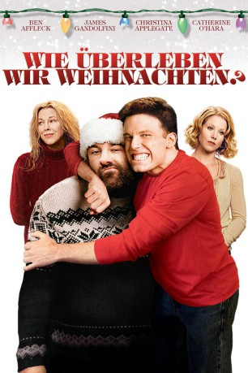

#5142 Wie überleben wir Weihnachten?
Alternativ: Surviving Christmas
 
 IMDB-Wertung: 5.3 / 10
IMDB-Wertung: 5.3 / 10  Metascore: 0
Metascore: 0 
Der depressive Drew Lathem wird kurz vor den Weihnachtsfeiertagen von seiner Freundin verlassen und um die Weihnachtsfeiertage besser überstehen zu können und nicht allein zuhause zu bleiben fährt er zu dem alten Haus seiner Familie und fragt wer nun dort lebt, um über die Feiertage eingeladen zu werden. Doch er ahnt nicht, dass die Familie ebenso psychisch unstabil ist wie er...
Jahr: 2004
Dauer: 90 Minuten
FSK: 0
Land: USA Studio: DreamWorks DistributionTonspuren: DTS - ,
Untertitel: Deutsch, Englisch,
Auflösung: 1080p (1920x1080) Größe: 6952 MB
Genre: Komödie, Liebe, Weihnachten
Regisseur: Mike Mitchell
Drehbuch: Pernilla Oljelund
Soundtrack:
Darsteller:
 Ben Affleck als Drew Latham
Ben Affleck als Drew Latham James Gandolfini als Tom Valco
James Gandolfini als Tom Valco Christina Applegate als Alicia Valco
Christina Applegate als Alicia Valco Catherine O'Hara als Christine Valco
Catherine O'Hara als Christine Valco- Josh Zuckerman als Brian Valco
 Bill Macy als Doo-Dah
Bill Macy als Doo-Dah Jennifer Morrison als Missy Vangilder
Jennifer Morrison als Missy Vangilder Udo Kier als Heinrich
Udo Kier als Heinrich David Selby als Horace Vangilder
David Selby als Horace Vangilder Stephanie Faracy als Letitia Vangilder
Stephanie Faracy als Letitia Vangilder Stephen Root als Dr. Freeman
Stephen Root als Dr. Freeman Sy Richardson als Doo-Dah Understudy
Sy Richardson als Doo-Dah Understudy- Tangie Ambrose als Kathryn
 Peter Jason als Suit
Peter Jason als Suit- Phill Lewis als Levine the Lawyer
- Kate Hendrickson als Santa's Photographer
- Hailey Noelle Johnson als Little Girl
- Sean Marquette als Older Brother
- Caitlin Fein als Freeman Twin
 Amanda Fein als Freeman Twin
Amanda Fein als Freeman Twin Mike Bell als Christmas Present
Mike Bell als Christmas Present- Amy Halloran als Fanny
 Sonya Eddy als Security Lady
Sonya Eddy als Security Lady- Ron Karabatsos als Deli Man
- Angela Gacad als Cute Girl at Play
 Tom Kenny als Man Wrapping Gift
Tom Kenny als Man Wrapping Gift Joan Blair als Lonely Lady
Joan Blair als Lonely Lady- John Carter Brown als Depressed Donator
 Linda Kerns als Choir
Linda Kerns als Choir Anika Noni Rose als Choir
Anika Noni Rose als Choir- Jon Simanton als Elf
- Allison Queal als Elf
- Kacie Borrowman als Elf
- Ray Buffer als Arnie , uncredited
- Bryan Fisher als Steve , uncredited
- Katy Maloney als Crazy Airport Traveler , uncredited
 Marshall Manesh als Janitor , uncredited
Marshall Manesh als Janitor , uncredited Maureen Mendoza als Flight Attendant , uncredited
Maureen Mendoza als Flight Attendant , uncredited Marcio Rosario als Husband Baking Cookies , uncredited
Marcio Rosario als Husband Baking Cookies , uncredited- Richard Strobel als Shopper , uncredited
- John Thurner als Shopper , uncredited
- Susanna Velasquez als Wife Baking Cookies , uncredited
- Brigitte Wulf als Shopper , uncredited
- John 'B.J.' Bryant als Cabbie
- Tumbleweed als Santa
- Bridgette Ho als Five Year Old
 Kent Osborne als Marley
Kent Osborne als Marley Bill Saito als Christmas Past
Bill Saito als Christmas Past- Josh Siegel als Young Scrooge
- K. Troy Zestos als Chad
Datei: X:\2004(N-Z)\Wie überleben wir Weihnachten (2004, FSK0, 1920x1080).mkv seit 23.12.2016
Festplatte: HD 2003-2004-2005(A-F)
 Es gibt insgesamt 54 Filme in der Gruppe '2004(N-Z)'
Es gibt insgesamt 54 Filme in der Gruppe '2004(N-Z)'